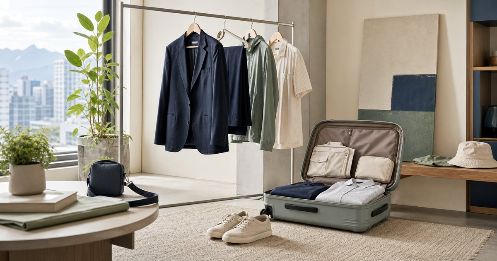

Elite Fashion｜大尺碼穿搭也能俐落：上班、旅行與週末的選款順序
俐落穿搭不是靠尺寸標籤決定，而是版型、材質、層次與場合順序。從上班、旅行到週末，整理更可重複穿用的選款方法。

先分上班、旅行、週末三種場合
同一件衣服能不能反覆穿，取決於場合。上班需要俐落，旅行需要舒適和好收，週末需要活動感。先分場合，選款就不會只看當下好不好看。
可以把 B+ 大尺碼專家、UV100、VENUSY、Be yourself 與 S′AIME 放在同一個場合裡比較，但不要只看外型。編輯部會先看版型、重量、材質、收納、是否能和既有衣物搭配，以及它在上班、旅行或週末之間能不能轉換。
比較穩妥的順序是先確認 哪三種場合最常出現、哪些衣服能跨場合使用。常見失誤是 只看單件照片，沒有想它會搭哪個包和鞋；在 辦公室、短旅行與週末城市散步 裡，能被反覆穿用、容易保養、場合感清楚的品項，比一次買很多更實際。
- 先挑可跨場合的基礎層。
- 包鞋和外套一起看，整體才會穩。
版型要留活動量，不是只追求寬鬆
大尺碼穿搭最容易被誤解成越寬鬆越舒服。其實肩線、腰臀活動量、褲長和袖長都會影響整體俐落度。
可以把 B+ 大尺碼專家、VENUSY、Be yourself 與 UV100 放在同一個場合裡比較，但不要只看外型。編輯部會先看版型、重量、材質、收納、是否能和既有衣物搭配，以及它在上班、旅行或週末之間能不能轉換。
比較穩妥的順序是先確認 坐下、走路、抬手和搭外套是否順。常見失誤是 把寬鬆當成唯一條件，最後比例反而不清楚；在 長時間上班、搭車旅行與週末步行 裡，能被反覆穿用、容易保養、場合感清楚的品項，比一次買很多更實際。
- 試想坐下和行走狀態。
- 外套與褲型要留出層次，而不是全部放大。
材質決定旅行時會不會煩
旅行穿搭要看皺褶、重量、快乾和是否容易搭配。漂亮但難整理的衣服，在短旅行裡很快變成負擔。
可以把 UV100、Be yourself、B+ 大尺碼專家與 S′AIME 放在同一個場合裡比較，但不要只看外型。編輯部會先看版型、重量、材質、收納、是否能和既有衣物搭配，以及它在上班、旅行或週末之間能不能轉換。
比較穩妥的順序是先確認 是否容易收進行李、是否適合室內外溫差。常見失誤是 帶了太多只能穿一次的單品；在 兩天一夜、商務旅行與城市週末 裡，能被反覆穿用、容易保養、場合感清楚的品項，比一次買很多更實際。
- 旅行優先選可重複搭配的顏色。
- 易皺材質要看是否值得帶。
防曬外套和小包要服務動線
外套和小包不是配件而已，它們會決定你出門是否順手。防曬外套要能收，包包要能放手機、卡片和必要小物。
可以把 UV100、S′AIME、UD LAB 與 B+ 大尺碼專家 放在同一個場合裡比較，但不要只看外型。編輯部會先看版型、重量、材質、收納、是否能和既有衣物搭配，以及它在上班、旅行或週末之間能不能轉換。
比較穩妥的順序是先確認 外套是否能放進包裡、包款容量是否夠用。常見失誤是 外套和包各自好看，但一起使用時卡住；在 通勤、旅行轉車與週末市集 裡，能被反覆穿用、容易保養、場合感清楚的品項，比一次買很多更實際。
- 包款容量先看實際物品。
- 外套收納後不應佔滿整個包。
顏色不用全黑，也不用全亮
俐落穿搭不等於全黑。中性色、低飽和色和一個亮點配件，常常更容易在上班和週末之間轉換。
可以把 VENUSY、Be yourself、B+ 大尺碼專家、S′AIME 與 KANGOL 放在同一個場合裡比較，但不要只看外型。編輯部會先看版型、重量、材質、收納、是否能和既有衣物搭配，以及它在上班、旅行或週末之間能不能轉換。
比較穩妥的順序是先確認 衣櫃裡哪些顏色已經能互相搭配。常見失誤是 每次都買不同亮色，最後沒有基礎單品承接；在 辦公室、聚餐和旅行拍照 裡，能被反覆穿用、容易保養、場合感清楚的品項，比一次買很多更實際。
- 先建立兩到三個可互搭色系。
- 亮點放在包、帽或飾品會更好控制。
最實用的選款順序：褲裝、外層、包鞋
如果只做一輪整理，先看褲裝和裙裝的活動量，再看外層，最後搭配包鞋。這樣比先買漂亮上衣更容易建立完整穿搭。
可以把 B+ 大尺碼專家、UV100、VENUSY、Be yourself 與 S′AIME 放在同一個場合裡比較，但不要只看外型。編輯部會先看版型、重量、材質、收納、是否能和既有衣物搭配，以及它在上班、旅行或週末之間能不能轉換。
比較穩妥的順序是先確認 哪一件下身最常穿、哪一件外層最能跨場合。常見失誤是 先買亮眼單品，卻沒有基礎搭配承接；在 想把衣櫃整理得更輕但更有場合感的人 裡，能被反覆穿用、容易保養、場合感清楚的品項，比一次買很多更實際。
- 下身版型穩，整體就穩一半。
- 包鞋最後補強場合，而不是一開始決定全部。
FAQ
大尺碼穿搭一定要選寬鬆嗎？
不一定。重點是活動量、比例和場合感，過度寬鬆反而可能讓線條不清楚。
旅行穿搭最該注意什麼？
材質、重量、皺褶和是否能重複搭配。旅行中好整理比單件亮眼更重要。
上班和週末可以共用同一套衣服嗎？
可以。只要基礎單品夠穩，再用包鞋、外套或飾品調整場合感即可。
下一步建議
如果你想把衣櫃整理得更俐落，可以先從上班、旅行和週末都能轉換的基礎單品開始。
重要警語
本文為一般穿搭、版型與收納情境整理，不構成個人造型診斷或尺寸保證。服飾與包款請依商品頁尺寸、材質與個人需求選擇。
本文含品牌／商品導購連結；若你透過部分商品連結前往選購，Elite Fashion 可能取得合作收益。本文仍以編輯判斷與使用情境整理為主，價格、規格、活動與庫存請以商品頁公告為準。